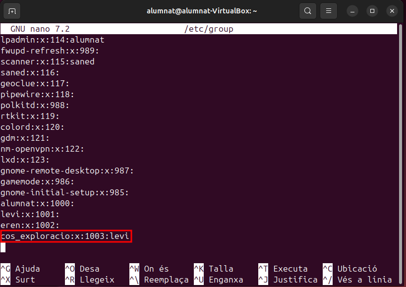

Fitxers importants
Els fitxers de configuració són essencials per gestionar el sistema operatiu i controlar com interactuen els usuaris, els grups i els permisos dins del sistema. A continuació, veurem diversos fitxers clau que es troben en la ruta /etc i que emmagatzemen informació crítica sobre usuaris, grups, contrasenyes i configuració general.
Fitxer /etc/passwd
El fitxer /etc/passwd és fonamental en Linux, ja que conté informació bàsica sobre tots els usuaris del sistema. Cada línia d'aquest fitxer descriu un usuari i els seus atributs essencials.
Per accedir a aquest document podem utilitzar aquesta comanda:
sudo nano /etc/passwd
-
alumnat: El nom d'usuari amb el qual l'usuari inicia sessió.
-
x: Indica que la contrasenya encriptada es troba en el fitxer /etc/shadow. Això ajuda a separar la informació de les contrasenyes de la resta de la configuració de l'usuari.
-
1000: (Identificador d'Usuari): Un identificador únic per a cada usuari del sistema. En el cas d'usuaris normals, aquest identificador comença des de 1000.
-
1000: (Identificador de Grup): El grup principal de l'usuari, associat també a un identificador numèric.
-
alumant Nom complet: Un camp opcional que pot contenir el nom complet de l'usuari o qualsevol altra informació descriptiva.
-
/home/alumnat Directori home: El directori personal de l'usuari, on s'emmagatzemen els fitxers personals. Per exemple, /home/usuari.
-
/bin/bash Shell: El programa o shell que s'utilitzarà per a la sessió. El més comú és /bin/bash, que correspon a la shell Bash.
Fitxer /etc/group
El fitxer /etc/group conté informació sobre els grups d'usuaris. Cada línia d'aquest fitxer defineix un grup i els usuaris que en formen part.
Per accedir a aquest document podem utilitzar aquesta comanda:
sudo nano /etc/group

- cos_exploracio: El nom del grup (per exemple, alumnat).
- x: Indica que no es mostra ni s'utilitza la contrasenya per al grup (generalment es gestiona a través del fitxer /etc/gshadow).
- 1003 GID (Identificador de Grup): Un identificador únic per al grup dins del sistema.
- levi Usuaris: Els usuaris que són membres del grup. Els noms d'usuari estan separats per comes.
Fitxer /etc/shadow
El fitxer /etc/shadow conté les contrasenyes encriptades dels usuaris i altres informació relacionada amb la seguretat dels comptes d'usuari. Aquest fitxer només pot ser llegit per l'usuari root per motius de seguretat.
Per accedir a aquest document podem utilitzar aquesta comanda:
sudo nano /etc/shadow
-
levi: El nom de l'usuari.
-
($y$j9T$ezp6aFOuB1Y5GYhu0ESlz0$j6kJJ6ZPnyHW.d/R6iCVx5HMwFLA6L/ytjskgyUHMP4): Aquesta és la contrasenya encriptada de l'usuari, utilitzant un algoritme de hashing (probablement SHA-512 o un algorisme similar).
-
Últim canvi (20055): El número de dies des de l'1 de gener de 1970 que es va canviar la contrasenya.
-
Expiració de la contrasenya (0): El valor 0 indica que no hi ha data d'expiració definida per la contrasenya de l'usuari, és a dir, la contrasenya no caduca automàticament.
-
Advertència de caducitat (99999): Aquest valor indica que l'usuari serà advertit sobre la caducitat de la contrasenya 99999 dies abans que caduca. En aquest cas, significa que no hi ha cap advertència configurada.
-
Inactivitat (7): Aquest valor indica que després de 7 dies d'inactivitat (és a dir, sense iniciar sessió), l'usuari serà bloquejat o es produirà algun tipus de restricció.
Fitxer /etc/gshadow
El fitxer /etc/gshadow conté informació sobre les contrasenyes de grups. Això és útil quan cal gestionar grups que requereixen autenticació per accedir a recursos compartits.
Per accedir a aquest document podem utilitzar aquesta comanda:
sudo nano /etc/gshadow
-
Nom del grup (cos_exploracio): Aquest és el nom del grup, en aquest cas, "cos_exploracio".
-
Contrasenya del grup (!): El símbol ! indica que el grup no té una contrasenya associada, el que significa que no es requereix cap contrasenya per afegir o modificar membres del grup. Si el grup tingués una contrasenya, aquesta seria encriptada com la contrasenya d'un usuari en el fitxer /etc/shadow.
-
Membres del grup (levi): Aquesta part mostra els membres del grup. En aquest cas, "levi" és l'únic membre del grup cos_exploracio. Això significa que l'usuari levi té accés a aquest grup i pot utilitzar els permisos associats amb ell.